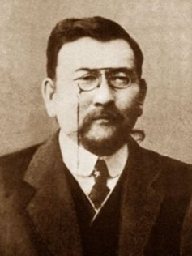

3-студент тақырыбы
Ахмет Байтұрсынұлы - қазақ тілінің реформаторы
Ұлт ұстазы, тілтанушы, ақын, аудармашы және Алаш қайраткері Ахмет Байтұрсынұлы қазақ халқының білім, мәдениет және тіл тарихында ерекше орын алады.

Өмірбаяны
Ұлтқа қызмет еткен ғұмыр
Ахмет Байтұрсынұлы 1872 жылы қазіргі Қостанай өңірінде дүниеге келді. Ол Торғайдағы орыс-қазақ училищесінде, кейін Орынбор мұғалімдер мектебінде білім алды. Еңбек жолын ауыл мектептерінде мұғалім болып бастап, халықты сауаттандыру ісіне ерте араласты.
Оның өмірі білім беру, тіл ғылымы, әдебиет және қоғамдық қызметпен тығыз байланысты болды. Алаш қозғалысы кезеңінде ұлттық мүддені қорғап, қазақ қоғамының саяси және мәдени жаңғыруына белсенді қатысты.
Әліпби реформасы
Қазақ жазуын жүйелеген реформатор
Төте жазу
Ахмет Байтұрсынұлы араб графикасын қазақ тілінің дыбыстық жүйесіне бейімдеп, халыққа түсінікті әрі қолдануға ыңғайлы жазу үлгісін жасады.
Грамматика негізі
Ол қазақ тіл білімінің негізгі ұғымдарын қалыптастырып, дыбыс, сөз, сөйлем туралы жүйелі түсініктерді оқулықтарға енгізді.
Сауат ашу
"Әліппе" және оқу құралдары арқылы қазақ балаларының ана тілінде білім алуына жол ашты.
Әдеби шығармалары
Ой мен өнерді ұштастырған мұра
"Қырық мысал"
Аударма мен мысал жанры арқылы қоғамдағы мінез-құлық, әділет, еңбек, білім туралы ой қозғаған жинақ.
"Маса"
Халықты оянуға, білімге және елдік санаға шақырған өлеңдер жинағы.
Оқу құралдары
"Тіл-құрал", "Әдебиет танытқыш" сияқты еңбектері қазақ ғылымы мен әдебиеттануының дамуына негіз болды.
Ағартушылық қызметі
Білім арқылы ұлтты көтеру
Ахмет Байтұрсынұлы мұғалім, әдіскер және публицист ретінде қазақ балаларына ана тілінде сапалы білім беруді басты мақсат санады. Ол мектепке арналған оқулықтар жазып, баспасөз арқылы халыққа білім, мәдениет және бірлік идеясын таратты.
- 1895 Орынбор мұғалімдер мектебін аяқтады.
- 1909 Қоғамдық көзқарасы үшін қуғын көрді.
- 1913 "Қазақ" газеті арқылы ағартушылық ой таратты.
- 1920s Қазақ тіл білімі мен оқулық ісін дамытты.
Галерея
Тарихи тұлға бейнесі
"Ұлттың сақталуына да, жоғалуына да себеп болатын нәрсенің ең қуаттысы - тіл."
Бұл сөз Ахмет Байтұрсынұлының тіл тағдырына ерекше мән бергенін көрсетеді.